Operating modes#
The mode of operation (0x6060, reported in 0x6061) decides what the drive does with
its targets. EposLib switches it for you - SetControl(), Home() and Enter*Mode() set the
mode their request needs - but each mode has its own inputs, outputs, limits and status bits,
and this page goes through them one by one. Section and figure numbers refer to the EPOS4
Firmware Specification.
| Value | Mode | EposLib | Trajectory |
|---|---|---|---|
| 1 | Profile Position (PPM) | SetControl(controls::ProfilePosition) |
drive |
| 3 | Profile Velocity (PVM) | SetControl(controls::ProfileVelocity) |
drive |
| 6 | Homing (HMM) | Home(controls::Homing), SetPosition() |
drive |
| 8 | Cyclic Synchronous Position (CSP) | EnterCyclicPositionMode() + StageTargetPosition() |
master |
| 9 | Cyclic Synchronous Velocity (CSV) | EnterCyclicVelocityMode() + StageTargetVelocity() |
master |
| 10 | Cyclic Synchronous Torque (CST) | EnterCyclicTorqueMode() + StageTargetTorque() |
master |
Which modes a drive implements is in «Supported drive modes» (0x6502); the EPOS4 reports
0x000003A5, exactly these six. motor.SupportsMode(mode) decodes it.
Profile Position Mode (PPM)#
Section 3.3. The master sends a target position; the drive's trajectory generator plans a trapezoidal move to it and feeds the result, the position demand value, to the position controller.
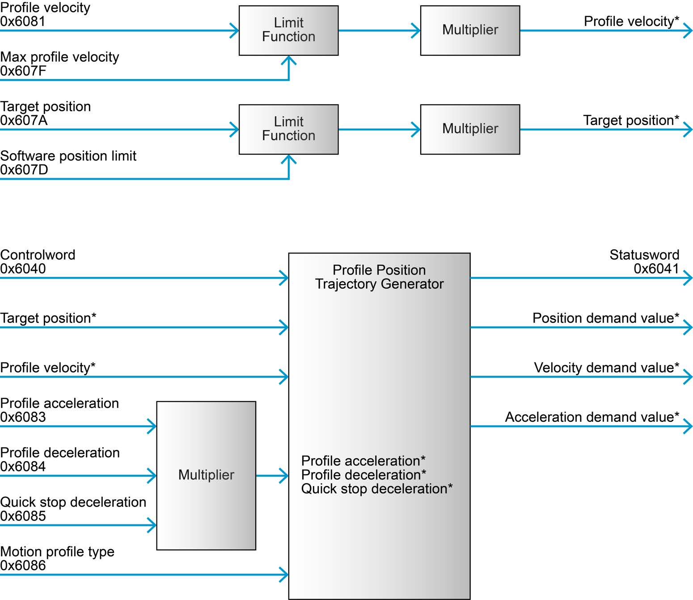
| Objects | EposLib | |
|---|---|---|
| Configure | software position limit 0x607D, max profile velocity 0x607F, max motor speed 0x6080, max gear input speed 0x3003:03, quick stop deceleration 0x6085, max acceleration 0x60C5 |
LimitConfigs, MotionProfileConfigs, GearConfigs |
| Command | Controlword 0x6040, target position 0x607A, profile velocity 0x6081, profile acceleration 0x6083, profile deceleration 0x6084, motion profile type 0x6086 (0 = linear ramp) |
controls::ProfilePosition and MotionProfileConfigs |
| Output | Statusword 0x6041, position demand value 0x6062 |
GetPositionDemand(), status bits below |
Controlword bits (Table 3-15):
| Bit | Name | 0 | 1 |
|---|---|---|---|
| 4 | New setpoint | - | assume the target position (rising edge) |
| 5 | Change set immediately | finish the current move first | abort it and start the new one |
| 6 | Abs / rel | target is absolute | target is relative |
| 8 | Halt | execute or continue | stop with profile deceleration |
| 15 | Endless movement | normal | move continuously at profile velocity, direction from the target's sign |
Statusword bits (Table 3-18):
| Bit | Name | Meaning |
|---|---|---|
| 10 | Target reached | target reached (or, halted: velocity is 0) |
| 12 | Setpoint acknowledge | the setpoint was assumed; no new one accepted until bit 4 drops |
| 13 | Following error | the following error exceeds its window |
The setpoint handshake#
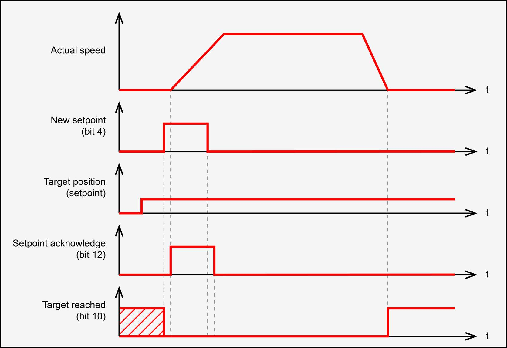
- Write the target position (and any profile change).
- Raise New setpoint (bit 4). The drive assumes the target on the rising edge.
- The drive answers with Setpoint acknowledge (bit 12).
- Lower bit 4. The drive lowers bit 12 when it can take the next setpoint.
SetControl(ProfilePosition) performs all four steps, waiting three SYNC periods after each
edge so the drive has seen it (with the Controlword in a synchronous RPDO, a write leaves on
SYNC n, is applied on SYNC n+1, and its answer arrives in the TPDO of SYNC n+2).
Forgetting step 4 is the classic PPM bug: the next move is silently ignored.
The trajectory itself is in Motion profiles.
Profile Velocity Mode (PVM)#
Section 3.4. The master sends a target velocity; the drive ramps to it on the profile acceleration and deceleration, and holds it with the velocity controller.
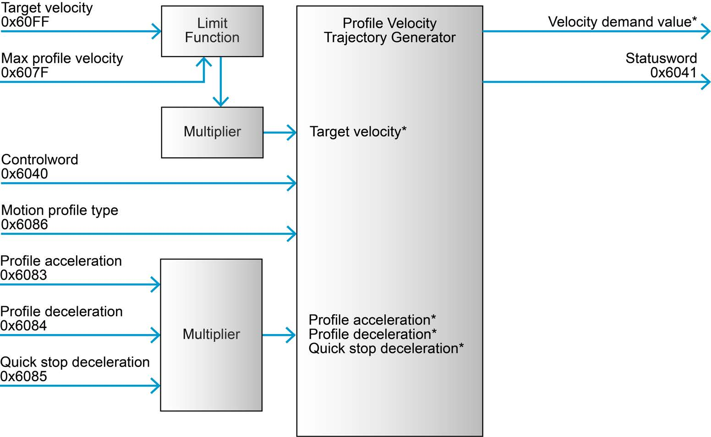
| Objects | EposLib | |
|---|---|---|
| Configure | software position limit, max profile velocity, max motor speed, max gear input speed, quick stop deceleration, max acceleration | as PPM |
| Command | Controlword, target velocity 0x60FF, profile acceleration, profile deceleration, motion profile type |
controls::ProfileVelocity |
| Output | Statusword, velocity demand value 0x606B |
GetVelocityDemand() |
Controlword: bit 8, Halt - stop the axis.
Statusword (Table 3-25):
| Bit | Name | Meaning |
|---|---|---|
| 10 | Target reached | target velocity reached (halted: velocity is 0) - IsTargetReached() |
| 11 | Speed is limited | limited to max profile velocity (shared with I²t limiting) - IsInternalLimitActive() |
| 12 | Speed | speed is zero - IsAtZeroSpeed() |
The Controlword applies the target velocity
The manual states that a new target velocity is not assumed before the Controlword is
written (Table 3-20). With EposLib's example mapping the Controlword travels in a
synchronous RPDO and is therefore written on every SYNC, so a new target velocity takes
effect on the next SYNC. Without PDOs, a target velocity written over SDO waits for the
next Controlword write. Not verified in simulation: epos4_sim does not model PVM.
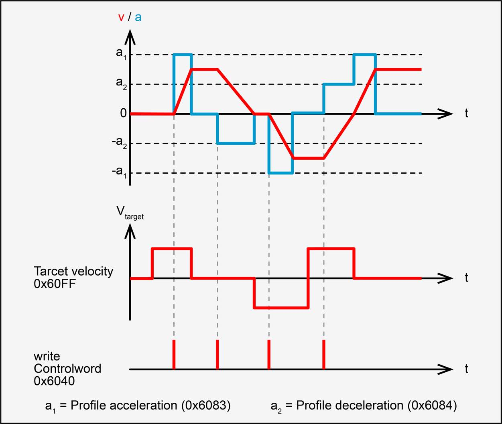
Homing Mode (HMM)#
Section 3.5. The drive runs a homing method: a search for a switch, an index pulse or a hard stop, ending by assigning the home position there.
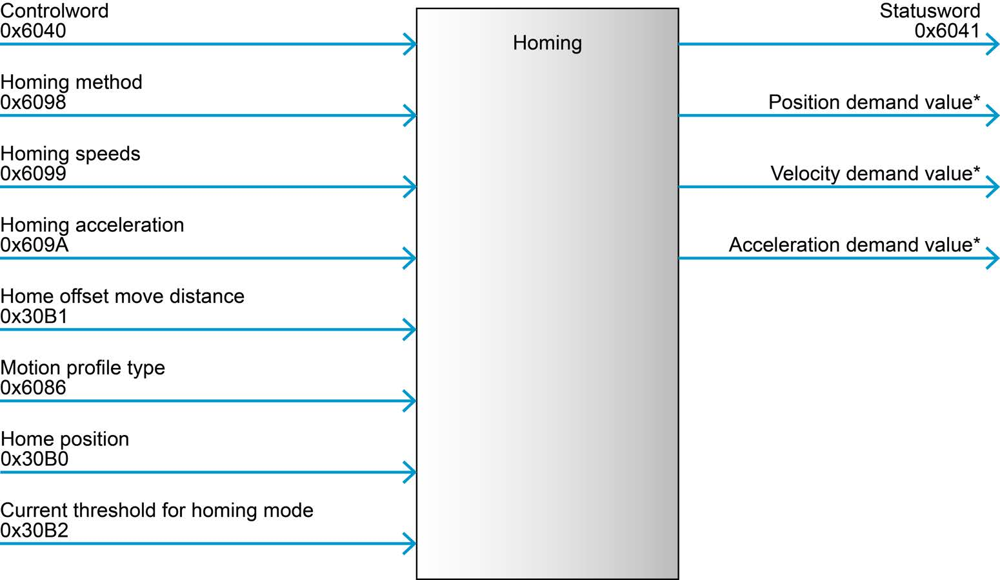
| Objects | EposLib | |
|---|---|---|
| Configure | digital input properties 0x3141, configuration of digital inputs 0x3142, motion profile type |
DigitalInputConfigs |
| Command | Controlword, homing method 0x6098, homing speeds 0x6099, homing acceleration 0x609A, home offset move distance 0x30B1, home position 0x30B0, current threshold 0x30B2 |
controls::Homing, HomingConfigs |
| Output | Statusword | IsHomingAttained(), HasHomingError(), IsPositionReferenced() |
Controlword: bit 4, Homing operation start (rising edge); bit 8, Halt.
Statusword (Table 3-33):
| Bit 13 error | Bit 12 attained | Bit 10 target reached | Meaning |
|---|---|---|---|
| 0 | 0 | 0 | homing in progress |
| 0 | 0 | 1 | homing interrupted or not started |
| 0 | 1 | x | homing completed successfully |
| 1 | 0 | x | homing error |
and bit 15, position referenced to home position, which stays set until the reference is lost. Every method, with the manual's drawing, is on the Homing page.
Cyclic Synchronous Position (CSP)#
Section 3.6. The master generates the trajectory and sends a target position every cycle; the drive interpolates linearly between consecutive targets over the interpolation time period and closes the position loop.
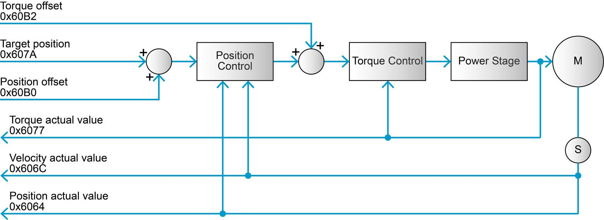
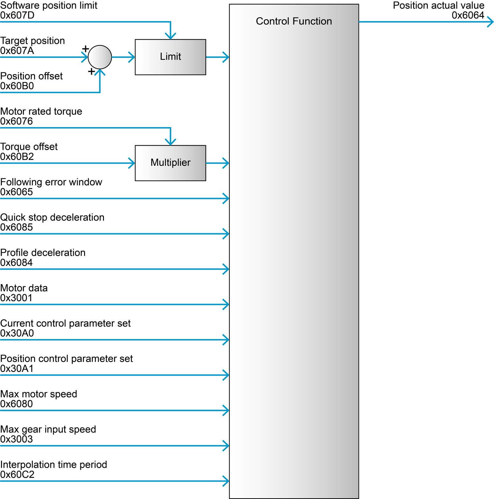
| Objects | EposLib | |
|---|---|---|
| Configure | motor data 0x3001, current and position control parameters, quick stop and profile deceleration (stopping only), following error window 0x6065, software position limit, motor rated torque 0x6076, max motor speed, max gear input speed, interpolation time period 0x60C2 |
MotorConfigs, PositionControlConfigs, LimitConfigs, CyclicConfigs |
| Command | target position 0x607A, position offset 0x60B0, torque offset 0x60B2 |
StageTargetPosition(), controls::CyclicPosition |
| Output | torque actual 0x6077, velocity actual 0x606C, position actual 0x6064 |
GetCachedTorque/Velocity/Position() |
Notes from the manual:
- The interpolation is active for PDO communication only - CSP over SDO jumps.
- The velocity offset is not used in CSP.
- Max motor speed and max gear input speed limit and monitor the following error only during PDO communication.
- The decelerations are used for stopping only, not during normal operation.
- No mode-specific Controlword bits. Statusword bit 12 is drive follows command value
(
IsFollowingCommand()), bit 13 following error.
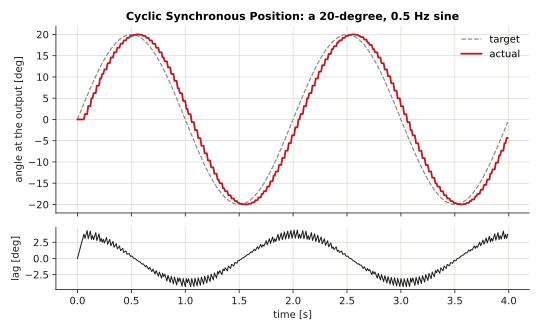
Cyclic Synchronous Velocity (CSV)#
Section 3.7. The master sends a target velocity every cycle; the drive interpolates and closes the velocity loop.
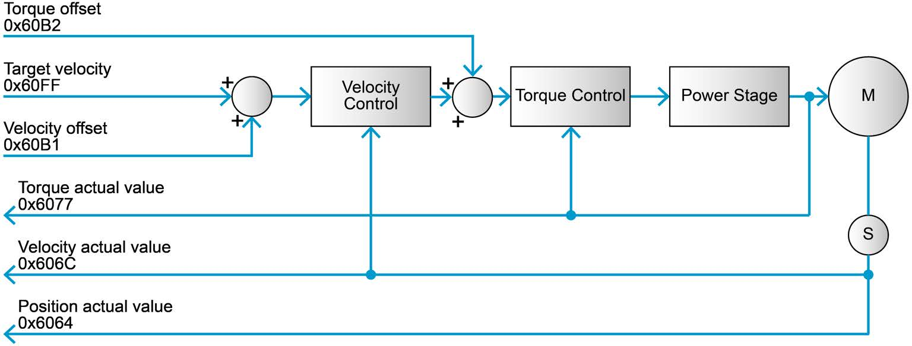
| Objects | EposLib | |
|---|---|---|
| Configure | motor data, current and velocity control parameters, decelerations (stopping only), software position limit, motor rated torque, max motor speed, max gear input speed, interpolation time period | VelocityControlConfigs, CyclicConfigs |
| Command | target velocity 0x60FF, velocity offset 0x60B1 (feed-forward), torque offset 0x60B2 (feed-forward) |
StageTargetVelocity(), controls::CyclicVelocity |
| Output | torque, velocity and position actual | GetCached*() |
Interpolation again only with PDOs. Statusword bit 12: drive follows command value.
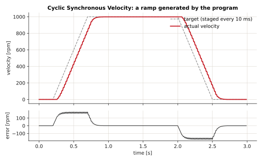
Cyclic Synchronous Torque (CST)#
Section 3.8. The master sends a target torque every cycle; the drive's current controller produces it. Nothing controls velocity.
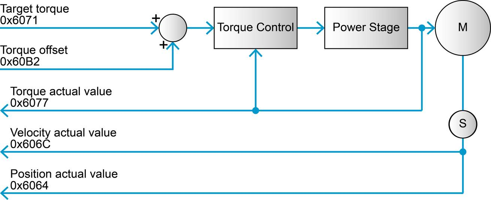
| Objects | EposLib | |
|---|---|---|
| Configure | motor data (nominal current, torque constant), max motor speed, max gear input speed, current control parameters, decelerations (stopping only), motor rated torque 0x6076, software position limit |
MotorConfigs, CurrentControlConfigs, LimitConfigs |
| Command | target torque 0x6071, torque offset 0x60B2 |
StageTargetTorque(), controls::CyclicTorque |
| Output | torque, velocity and position actual | GetCached*() |
Every torque object is in thousandths of the motor rated torque:
so with \(I_N = 9.28\) A and \(K_t = 104.79\) mN·m/A, \(\tau_{rated} = 0.9724\) N·m and a target of 100 is 0.0972 N·m at the motor shaft. See Motor and thermal model.
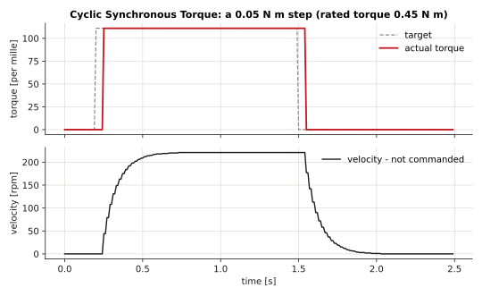
Choosing a mode#
| You want | Use |
|---|---|
| Move to a pose and stop, simply | PPM |
| Spin at a speed, simply | PVM |
| Several axes following a coordinated trajectory | CSP |
| Wheel speeds from a controller in your program | CSV |
| Force or torque control, impedance control, gravity compensation computed by you | CST, or CSP with a torque offset |
| An absolute reference for an incremental encoder | HMM |